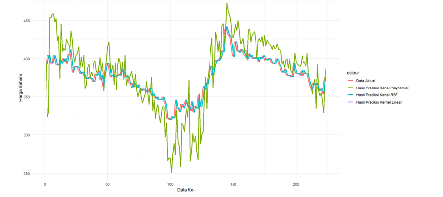
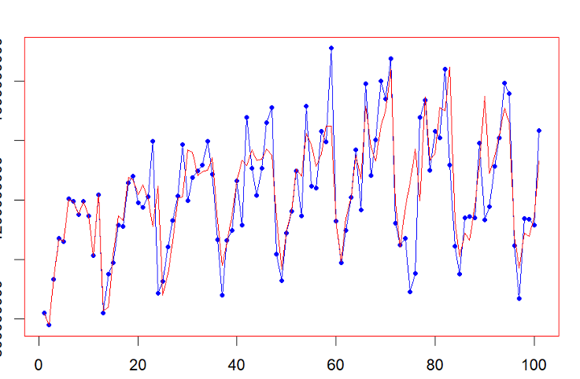
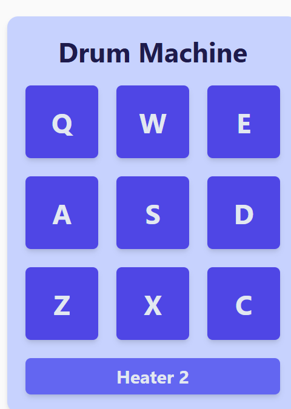
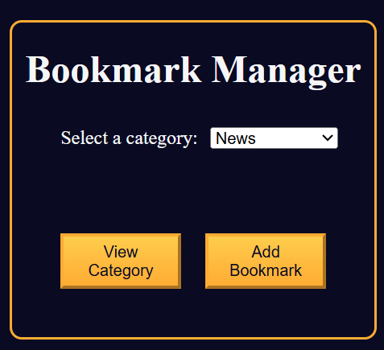

Technical Skills
Here are some of the tools and technologies I use in data analysis, statistics, and web development.


Aspiring Data Analyst & Web Developer |
Open to Internship & Entry-Level Opportunities
Hello, my name is Adinda Puja Puspita, a fresh graduate from the Actuarial Science program at Institut Teknologi Sepuluh Nopember (ITS). During my studies, I learned many concepts related to statistics, data analysis, and forecasting.
Through this experience, I realized that actuarial science is not only about insurance but also closely related to data processing and quantitative analysis. This led me to develop a strong interest in the fields of data analysis and data science.
I enjoy working with data, exploring patterns, and generating insights that support data-driven decision making. Recently, I have also developed an interest in web technologies, which motivated me to build this portfolio website myself as a platform to showcase my data projects and analytical work.
Here are some of the tools and technologies I use in data analysis, statistics, and web development.

Forecasting Stock Prices in the Technology Sector using Support Vector Regression
Read more

Application Of The Autoregressive Integrated Moving Average (ARIMA) Method in Forecasting Mandatory Contributtions To Traffic Accident Funds In Bojonegoro Regency Roads
Read more

[freeCodeCamp Project] Build a Drum Machine

[freeCodeCamp Project] Build a Bookmark Manager App